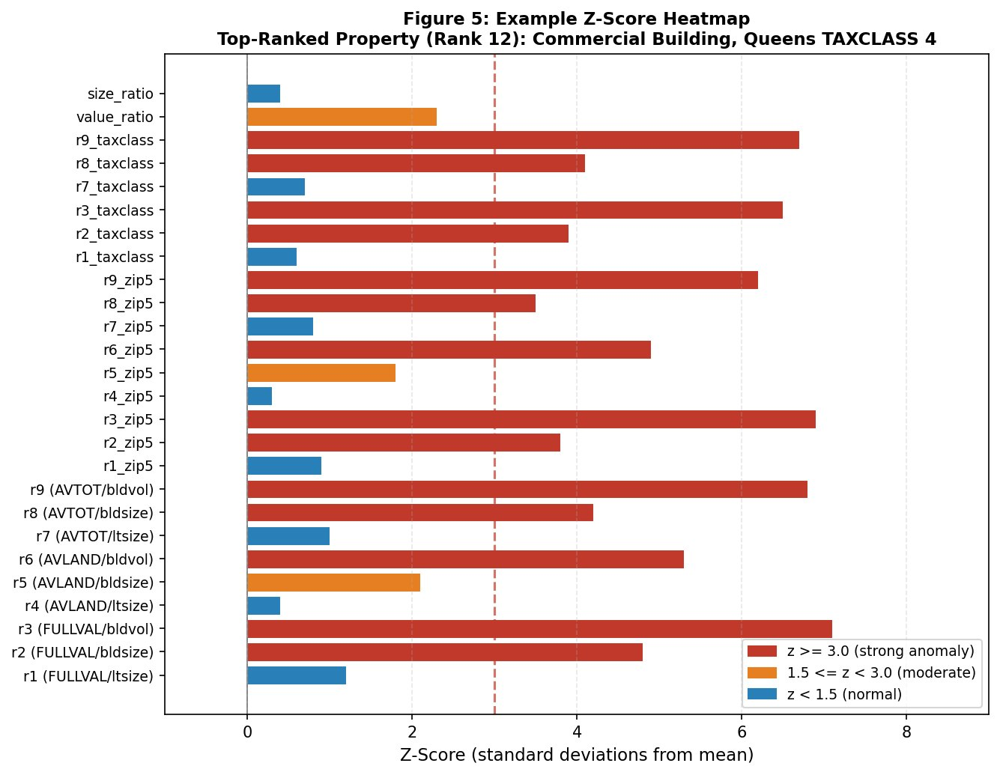
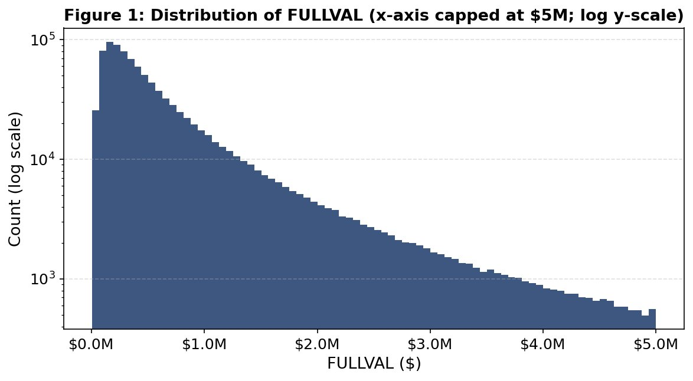

NYC Property Assessment Anomaly Detection
Fraud Analytics. Individual project.
Forecasting and riskCompleted
01Problem
Find mis-assessed properties in New York City's valuation data with no fraud labels to learn from.
02Approach
Cleaned 1,070,994 records, built 29 value-per-size variables, reduced them to 5 principal components (about 67% of variance) and scored records with a distance measure and an autoencoder.
03Impact
A ranked list of 1,044,492 properties. For each top-ranked property, a z-score breakdown shows exactly which value-per-size ratios look wrong, so an investigator knows where to start.
Results


What I did
- Excluded 26,502 government and institutional properties that aren't comparable.
- Imputed missing size and value fields by tax class, borough and building class.
- Normalized 9 value-per-size ratios against ZIP code and tax class peers (18 more variables).
Code
Z = StandardScaler().fit_transform(df[ratio_vars]) # 29 engineered variables
pca = PCA(n_components=5).fit(Z) # about 67% of variance
P = StandardScaler().fit_transform(pca.transform(Z))
score_distance = np.sqrt((P ** 2).sum(axis=1)) # how far from a typical property
recon = autoencoder.predict(P)
score_autoenc = np.sqrt(((P - recon) ** 2).sum(axis=1)) # how badly it is reconstructedTools
PythonPCAAutoencoder